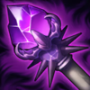
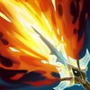

Peleadora
/
Maga
Dificultad Baja
HABILIDADES


PASIVA • NAVAJA DE LUNAPLATA
Cada tercer golpe inflige daño mágico adicional a los enemigos cercanos. Después de lanzar un hechizo, Diana obtiene velocidad de ataque para sus próximos 3 ataques.
1 • GOLPE CRECIENTE
Desata un rayo de energía lunar en un arco, lo que inflige daño mágico y aplica Luz Lunar.
2 • CASCADA PÁLIDA
Diana crea tres esferas que orbitan y detonan al contacto con los enemigos para infligir daño en un área. También obtiene un escudo temporal que absorbe el daño. Si la tercera esfera detona, el escudo gana fuerza adicional.
3 • IMPULSO LUNAR
Diana se desplaza hacia un enemigo e inflige daño mágico. Impulso Lunar no tiene enfriamiento cuando se usa para lanzarse hacia un enemigo afectado por Luz Lunar. Además de este efecto, elimina la Luz Lunar en el área.
DEFINITIVA • CAÍDA DE LA LUNA
Diana invoca la luna en un área, lo que ralentiza a los enemigos cercanos y aplica Luz Lunar en un área creciente. Al soltar el botón, la luna cae en espiral hacia los enemigos e inflige un daño que aumenta con el tiempo de carga.
CONFIGURACIÓN
OBJETOS
-

Vara de las Edades
2800+250 Vida Máxima
+60 Poder de Habilidad
+300 Maná Máximo
ETERNIDAD: Restaura maná igual al 15% del daño recibido de campeones. Gastar maná regenera Vida igual al 20% del costo de maná. Tiene un límite de 25 de Vida por cada lanzamiento.
VETERANO: Cada acumulación otorga 20 de Vida, 10 de Maná y 6 de Poder de Habilidad. Se acumula con una tasa de 1 cada 30 seg. Tiene un máx. de 10 acumulaciones y otorga 200 de Vida, 100 de Maná y 60 de Poder de Habilidad. -

Sombrero Mortífero de Rabadon
3500+120 Poder de Habilidad
DAÑO EXCESIVO: Aumenta el Poder de Habilidad en un 40%.
-

Maldición del Liche
2950+80 Poder de Habilidad
+10 Aceleración de Habilidad
MALDICIÓN: +5% de Velocidad de Movimiento.
ESPADA ENCANTADA: Usar una habilidad causa que el siguiente ataque dentro de 10 seg inflija daño mágico adicional igual al 75% AD básico (+50% AP). (1.5 seg de Enfriamiento).
El daño se reduce contra estructuras. -

Báculo del Vacío
2800+70 Poder de Habilidad
DISOLVER: +40% de Penetración de Magia.
-

Morellonomicón
3000+300 Vida Máxima
+70 Poder de Habilidad
PREDICADOR DEL FIN: +15 de Penetración de Magia.
AFLICCIÓN: Infligir daño mágico aplica un 40% de Heridas Graves a campeones enemigos por 3 seg. Si el objetivo está por debajo del 50% de Vida, este efecto aumenta a un 60% de Heridas Graves.
Heridas Graves reduce la efectividad de las curaciones y efectos regenerativos. -

Botas de Mercurio
1000CALZADO: +40 de Velocidad de Movimiento.
MEJORADO: +10 de Resistencia Mágica.
TENACIDAD: Reduce la duración de aturdimientos, ralentizaciones, provocaciones, miedo, silencio, ceguera e inmovilizaciones un 35%.
CARRERA (ACTIVA): Aumenta la Velocidad de Movimiento un 15% durante 3 seg. Infligir o recibir daño de campeones desactiva los efectos de Carrera. (60 seg de enfriamiento). -

Encantamiento de Estasis
800ESTASIS (ACTIVA): Te vuelves invulnerable e inalcanzable durante 2.5 seg, pero no puedes moverte, atacar, lanzar habilidades ni utilizar objetos. (120 seg de enfriamiento).
RUNAS Y HECHIZOS
-

Conquistador
Obtienes acumulaciones de fuerza adaptable al atacar a un campeón con habilidades o ataques separados. Se acumula hasta 5 veces. Al alcanzar el máximo de acumulaciones, inflige daño adaptable adicional a campeones.
POR ACUMULACIÓN: 2 - 6 de Daño de Ataque adicional o 3 - 9 de Poder de Habilidad durante 6 seg.
EFECTO ADICIONAL CON EL MÁXIMO DE ACUMULACIONES: Cuerpo a cuerpo: 10% | A distancia: 7% de daño adaptable adicional a campeones. -

Brutalidad
Obtienes 7 de Daño de Ataque y un 2% de Penetración de Armadura o 14 de Poder de Habilidad y un 2% de Penetración de Magia (adaptable).
-

Segundo Aire
Gana 5 de Vida cada 5 seg.
Después de recibir daño de un campeón enemigo, regenera 3(+1.5% de tu Vida faltante) a lo largo de los próximos 10 seg. Este efecto se duplica para campeones cuerpo a cuerpo. -

Dulces Frutos
Aumenta la curación de Frutamiel en un 25%. Cada vez que tú o un aliado cercano coma una Frutamiel, obtienes 20 de oro.
-

Barrera
ENFRIAMIENTO: 120 seg.
Obtienes un escudo que absorbe 115 de daño (115-465 basado en nivel) durante 2 seg. -

Destello
ENFRIAMIENTO: 150 seg.
Te teletransportas una distancia corta hacia delante o hacia la dirección objetivo.
CÓMO JUGAR DIANA
Diana es una asesina de daño mágico del carril central. Diana es una campeona cuerpo a cuerpo y puede luchar mucho al principio del juego (especialmente contra campeones a distancia) cuando intenta caminar hasta los últimos súbditos golpeados. Una vez que llegues al nivel 5 y obtengas Moonfall (Ultimate), puedes buscar vagar por el mapa con su estilo de juego agresivo. Lunar Rush (tercera habilidad) es una habilidad de carrera y se puede usar para atacar a los campeones enemigos y luego puedes usar tu habilidad definitiva para infligir una gran cantidad de daño.